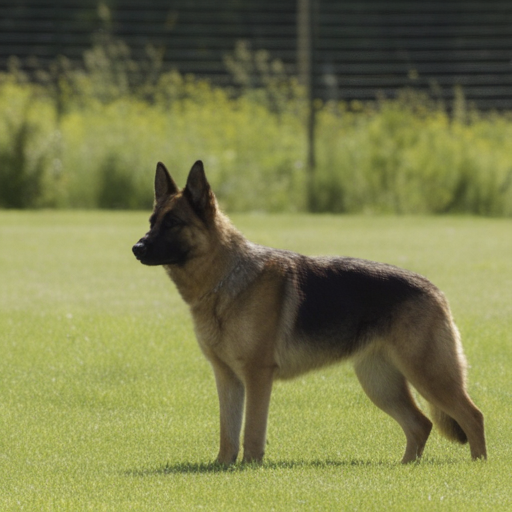
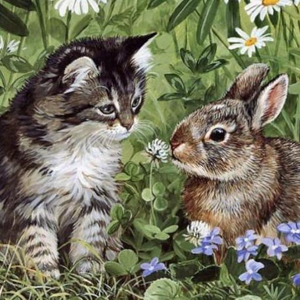
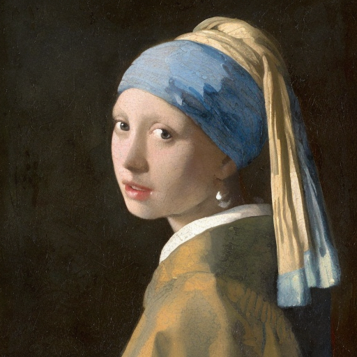
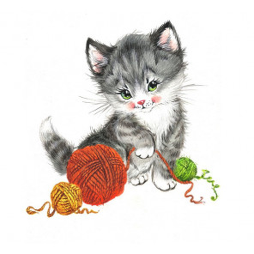
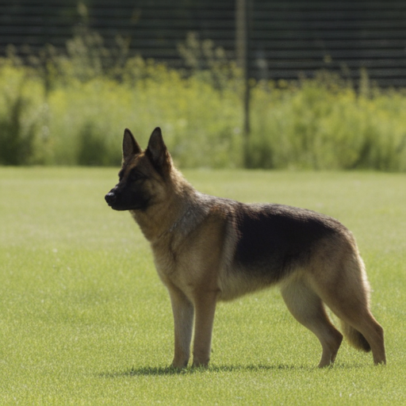
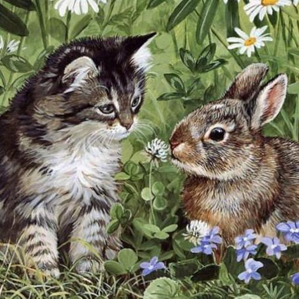
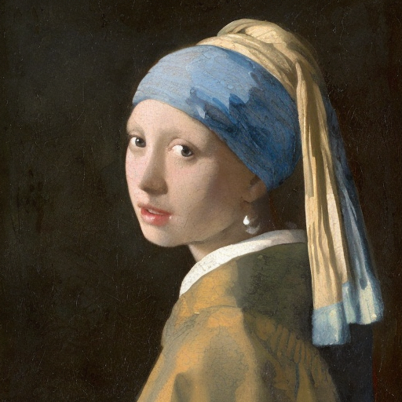
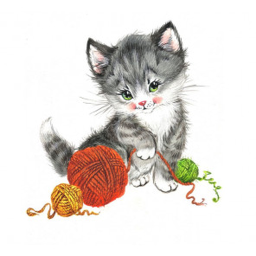

Image editing with diffusion models typically requires inversion: recovering the denoising trajectory from the input image X0 to noise XT. We build on Edit-Friendly DDPM inversion, where noise is added step-by-step using the forward scheduler to produce X1, X2, ..., XT.
During generation, it's not guaranteed that Xt will map back to Xt-1, so the method introduces a correction term z. This enables perfect reconstruction with the original prompt and meaningful edits with new prompts.
However, in few-step generation, directly using z leads to artifacts like ghosting and silhouette remnants, especially when the edit involves structural change. We identify the cause: the correction terms are spatially aligned with the original image, not the edited one.
Cora addresses this by aligning z to the target content using pixel correspondences computed from diffusion features, enabling clean, structure-consistent edits even in few-step settings.

 






